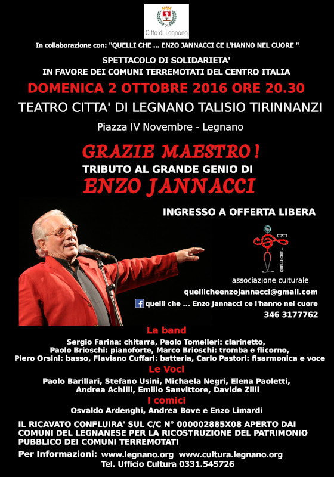
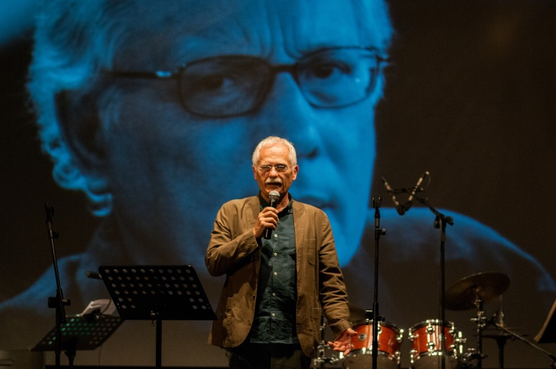

2 ott 2016 - Legnano (VA)
Iniziativa pro Terremotati

Il 2 ottobre 2016 con l'appoggio del Comune di Legnano, l'associazione "Quelli che ..." e tutti gli artisti di "Grazie Maestro" decidono di esibirsi, per devolvere integralmente il ricavato della serata ai comuni colpiti dal recente sisma dell'Italia centrale.
Anche il service luci e audio partecipa con una quota e permette così di raccogliere 1400 euro versati su un fondo messo a disposizione da un pool di Comuni del Legnanese.

L'assessore Chester Silvestri presenta l'iniziativa